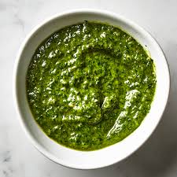

A quick and easy summer recipe garunteed to please the whole family
Ever wanted to make something quick and easy that reminds you of home? Ever needed a quick recipe to impress your friends? In a hurry but don't want to sacrifice taste? Look no further than pesto, a versitile sauce/spread that can be put on pasta with some tomatos for a decadent dinner or spread on a sandwich to liven up leftover chicken.

Basil, approxamately 2 small plants
Freshly grated parmesan
Pine nuts, toasted
Olive oil
salt and pepper, to taste
In a food processor, combine all of your basil with 3 tablespoons of toasted pine nuts, 4 ounces of parmesan cheese, and a healthy drizzle of olive oil. The resulting spread should be relatively chunky, continue to mix in olive oil or water until the desired consistency is achieved. Add salt and pepper to taste, and serve immediately mixed into pasta, topped with sliced cherry tomatoes and served with a side of fresh meatballs and a side salad.